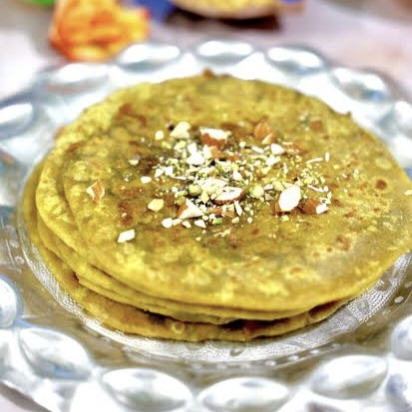

½ cup mixed dry fruits (almonds, cashews, pistachios, walnuts, raisins)
½ cup jaggery or powdered sugar
½ tsp cardamom powder
2 tbsp grated coconut (optional)

Instructions:
Prepare the Dough:
Mix flour, salt, and oil, then add water gradually to make a soft, pliable dough. Cover and rest for at least 30 minutes.
Cook Chana Dal:
Boil chana dal until soft but not mushy. Drain excess water and mash it into a smooth paste.
Make the Filling:
Finely chop or grind the dry fruits. In a pan, heat ghee, add dry fruits, grated coconut, and jaggery/sugar. Stir well until combined. Add cardamom powder and let it cool
Stuff & Roll:
Take a small dough ball, flatten it, and place a portion of the filling inside. Seal and gently roll into a thin disc.
కావలసినవిః
పిండి కోసం:
కప్పు ఆల్-పర్పస్ పిండి (లేదా గోధుమ పిండి)
2 టేబుల్ స్పూన్లు నూనె
¼ స్పూన్ ఉప్పు నీరు (అవసరం మేరకు)
ఫిల్లింగ్ కోసం:
½ కప్ మిక్స్డ్ డ్రై ఫ్రూట్స్ (బాదం, జీడిపప్పు, పిస్తా, వాల్నట్, ఎండుద్రాక్ష)
½ కప్పు బెల్లం లేదా పొడి చక్కెర
½ స్పూన్ యాలకుల పొడి
2 టేబుల్ స్పూన్లు తురిమిన కొబ్బరి
పిండిని సిద్ధం చేయండి:
పిండి, ఉప్పు మరియు నూనె కలపండి, ఆపై మెత్తగా, తేలికగా ఉండే పిండిని చేయడానికి క్రమంగా నీటిని జోడించండి. కనీసం 30 నిమిషాలు మూతపెట్టి విశ్రాంతి తీసుకోండి.
చనా దాల్ ఉడికించాలి:
చనా పప్పును మెత్తగా కాని మెత్తగా కాకుండా ఉడికించాలి. అదనపు నీటిని తీసివేసి, మెత్తని పేస్ట్లా చేయాలి.
ఫిల్లింగ్ చేయండి:
డ్రై ఫ్రూట్స్ను మెత్తగా కోయాలి లేదా మెత్తగా కోయాలి. ఒక బాణలిలో, నెయ్యి వేడి చేసి, డ్రై ఫ్రూట్స్, తురిమిన కొబ్బరి, మరియు బెల్లం / పంచదార జోడించండి. కలిసే వరకు బాగా కదిలించు. యాలకుల పొడి వేసి చల్లారనివ్వాలి.
స్టఫ్ & రోల్:
ఒక చిన్న డౌ బాల్ను తీసుకుని, దానిని చదును చేసి, లోపల ఫిల్లింగ్లో కొంత భాగాన్ని ఉంచండి. సీల్ మరియు శాంతముగా ఒక సన్నని డిస్క్ లోకి వెళ్లండి.
హోలిగ ఉడికించాలి:
రెండు వైపులా బంగారు గోధుమ రంగు వచ్చేవరకు నెయ్యితో వేడి తావాపై కాల్చండి. వెచ్చగా వడ్డించండి